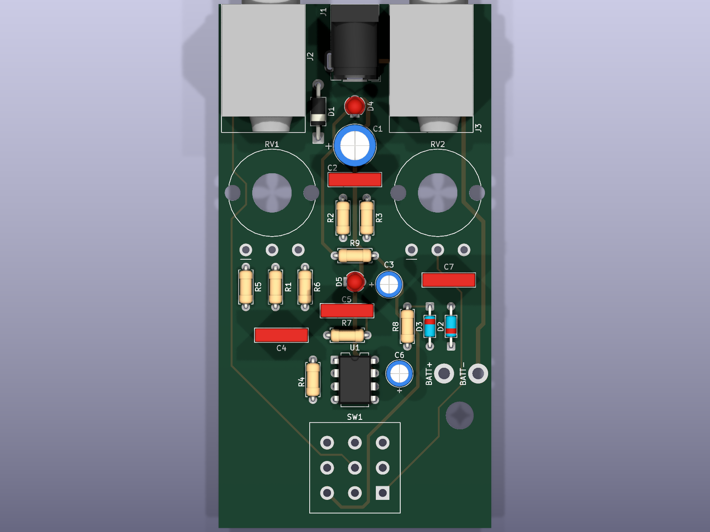
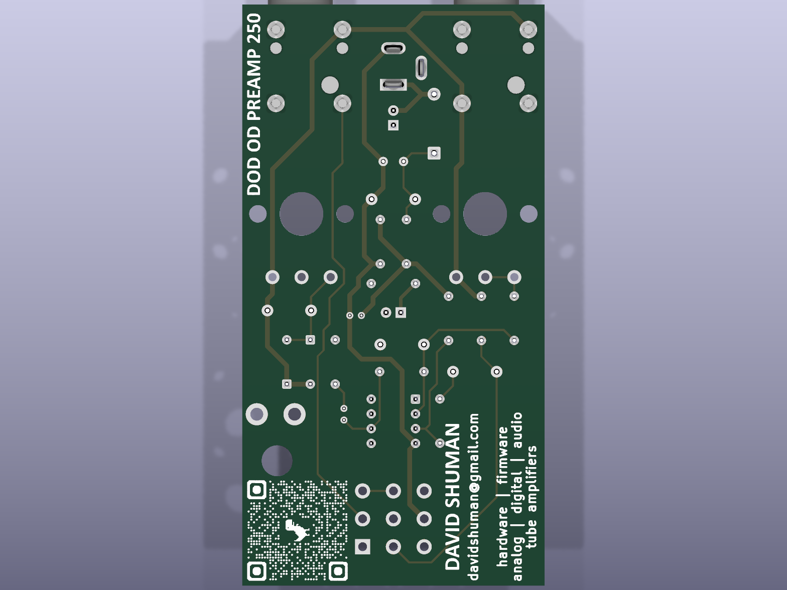
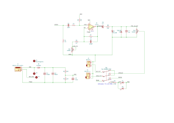

Overview
This board is a clone of the classic DOD 250 Overdrive Preamp: a single TL071 op-amp in a non-inverting gain stage, hard-clipped by a pair of back-to-back 1N4148 diodes, with GAIN (500 kΩ audio, RV1) and LEVEL (100 kΩ audio, RV2) controls. All switching is true-bypass via a board-mounted 3PDT footswitch. Power is 9 V from a 2.1 mm barrel jack (center-positive as shipped — see the center-negative conversion) or a 9 V battery wired to the BATT+ / BATT− pads. Idle current draw is roughly 2–3 mA, plus about 15 mA per status LED when lit.
You are reading the guide for PCB v1.0 — the first
fabricated revision, identifiable by the absence of a
v1.1 marking and QR code on the front silkscreen. v1.0 has known
power-circuit errors that the builder must correct;
all fixes are below. If your board says
v1.1, use the v1.1 guide instead.
Downloads
- Schematic as shipped, v1.0 (PDF) — shows the uncorrected power section
- Corrected schematic, v1.1 (PDF) — what the board looks like after Correction 3
- Bill of materials (CSV) — see v1.0 footprint notes
- Gerber fabrication files, v1.0 (ZIP)
- KiCad project source (GitHub)
Required corrections
Three issues, three fixes. The first is required for the pedal to make any sound at all; the second only if you want battery power; the third is strongly recommended. Do them before final assembly — two involve the area under and around the DC jack.
The audio ground net (jack sleeves, pot lug 3, the clipping diodes, R1) and the power ground net (op-amp pin 4, the supply caps, the DC-jack sleeve) are routed as two separate nets that are never joined anywhere on the board. Without a bond between them there is no signal return path: the pedal will not pass audio.
Fix (one wire): on the back of the board, solder a short jumper from the pad of C7 nearer C3 (C7 is the 1 nF film cap beside the LEVEL pot) to the negative pad of C3 (the 10 µF electrolytic; negative is the pad the can’s stripe points to). Any audio-ground point to any power-ground point works; this pair is a short hop that stays clear of the DC-jack area, so it remains correct even if you later do the center-negative conversion.
The trace from the 9 V rail to the BATT+ pad was never completed on v1.0 — the rail dead-ends just past U1 pin 7, about 13 mm short of the pad. (This is the “9V0 battery net disconnect” fixed in v1.1.) A battery wired to the stock pads does nothing. DC-adapter operation is unaffected.
Fix: depends on whether you also apply Correction 3:
- Without Correction 3: solder a ~13 mm wire on the back of the board from the BATT+ pad to U1 pin 7 — the second pin from the top of the right-hand column of the IC socket, directly to the left of the BATT+ pad.
- With Correction 3: run an insulated wire from the BATT+ pad to the top (anode) pad of D1 instead (route it along the back of the board), so the battery sits upstream of the protection diode exactly as in v1.1. Do not tie BATT+ to U1 pin 7 in this case — that would bypass the diode you just put in circuit.
As shipped, v1.0 feeds U1 pin 7 and the status LEDs directly from the jack’s center pin. D1 is in the circuit but protects only the Vref divider; the op-amp rail bypasses it, and C1/C2 filter the wrong node. The pedal works this way — but plug in a reversed supply (for example, a standard center-negative pedalboard supply) and the TL071 gets −9 V across its supply pins and the LEDs are reverse-biased well past their rating. Expect to lose U1.
Fix (one cut, one jumper) — moves the whole load downstream of D1, making the board electrically identical to v1.1:
- Cut: on the back of the board, a short diagonal trace runs from the jack’s center-pin node (left of J1, by D1’s top pad) down and right to the anode pad of D4 — the LED position just behind the DC jack; its anode pad is the one nearer the jack. Cut this diagonal close to D4. Verify with a meter that J1 pin 1 no longer reaches U1 pin 7.
- Jumper: solder a ~10 mm wire from the banded (cathode) end of D1 — the pad nearer C1 — to D4’s anode pad. The protected side of D1 now feeds the LEDs, U1, and the rest of the rail.
After this retrofit the supply chain is: jack center pin → D1 → C1/C2 filter → op-amp, LEDs, and Vref — a reversed supply is simply blocked, costing ~0.7 V of headroom.
Bill of materials
Components and values are identical to v1.1 — use the BOM CSV for exact part numbers (see the v1.1 page for the full table). One difference: several v1.0 capacitor footprints have wider lead spacing than the parts in the BOM, which were chosen for v1.1’s tighter footprints. All of them still fit with their leads formed outward, or you can substitute parts that drop straight in:
| Ref | Value | v1.0 footprint | BOM part | Fit on v1.0 |
|---|---|---|---|---|
| C1 | 100 µF | radial, 3.5 mm pitch (8 mm can) | Panasonic ECA-1EM101 (2.5 mm) | splay leads, or use any 8 mm/3.5 mm 100 µF 25 V |
| C2, C4, C7 | 100 n / 10 n / 1 n | box film, 7.5 mm pitch (MKS4 size) | KEMET PHE450 (5.0 mm) | form leads outward, or use WIMA MKS4 7.5 mm equivalents |
| C5 | 120 pF | box outline, 7.5 mm pitch | KEMET C315C121J2G5TA disc (2.5 mm) | form leads outward |
| C6 | 4.7 µF | radial, 2.0 mm pitch | Panasonic ECA-1HM4R7 (2.5 mm) | fits with a slight lead pinch |
Board layout



The power circuit
After Correction 3, the DC input chain is: barrel-jack center pin (J1 pin 1) → series diode D1 (1N4001) → protected 9 V rail feeding U1, the LEDs, the C1/C2 filters, and the Vref divider. A reversed supply (or backwards battery) is blocked by D1: no damage, no sound. Without Correction 3 the op-amp and LEDs hang directly on the jack with no reverse protection — see the warning in Correction 3.
Battery switching
The barrel jack has an internal normally-closed switch between its sleeve contact (pin 2, ground) and its switch pin (pin 3). The battery positive lead (BATT+ pad, once Correction 2 is applied) ties to the 9 V feed; the battery negative (BATT−) goes to jack pin 3. With no plug inserted the sleeve leaf rests on pin 3, grounding the battery negative — the battery powers the pedal. Inserting a DC plug lifts the leaf and disconnects the battery.
Unlike pedals that switch the battery through the input-jack ring, this board keeps the battery connected whenever no DC plug is inserted — regardless of whether a guitar cable is plugged in. (The input jack’s switched contact is used to ground the input against pops instead.) For storage, unsnap the battery or leave a dummy DC plug inserted.
Wiring the 3PDT footswitch
The board is laid out for a PCB-pin 3PDT latching stomp switch on the standard Taiwan-Alpha 9-pin grid: three columns 5.3 mm either side of center, three rows on 4.8 mm pitch, 1.5 mm holes. If you bought one of the switches in the BOM (Taiwan Alpha SF17010F / StompBox FSW-800-1028 / Tayda A-1842), there is no “wiring” — drop it into the SW1 footprint and solder all nine pins. The switch is symmetric: either rotation that fits the grid works, because each pole’s common is the center pin of its column.
Looking at the front of the board, switch at the bottom, jacks away from you, the SW1 pads carry these signals:
How it works: each press of the latching switch connects the middle-row commons to one outer row or the other.
- Engaged: commons connect to the bottom row — input-jack tip feeds the circuit input (5→4), the LEVEL pot wiper feeds the output jack (2→1), and the LED cathode path is grounded through R9 (8→7), lighting the status LED.
- Bypassed: commons connect to the top row — pads 6 and 3 are bridged by a trace on the board, so the input-jack tip is wired straight to the output-jack tip (5→6→3→2). The LED pole lands on pad 9, which is unconnected, so the LED goes dark. The signal never touches the circuit: true bypass.
Using a solder-lug 3PDT off-board
If your switch has solder lugs instead of PCB pins (or you want the switch mounted to the enclosure away from the board), wire each lug to its corresponding SW1 pad with hookup wire, matching the 3×3 grid above — lug 5 (center of the middle column) to pad 5, and so on. Eight wires are enough: pad 9 connects to nothing, so its lug can be skipped. Keep the two signal-pole wire runs (pads 1–6) short and away from the power wiring to avoid bypass-mode crosstalk.
Substituting a DPDT footswitch
A DPDT latching footswitch (e.g. Tayda A-361) can replace the 3PDT, but it has only two poles — both are consumed by the input and output signal switching, leaving nothing to switch the status LED.
- Fit the two DPDT columns into the middle and right columns of the SW1 footprint (pads 1–6). The row pitch (4.8 mm) matches the standard pedal DPDT; verify the column spacing of your particular switch against the 5.3 mm grid before ordering, and dress the pins to fit if slightly off.
- The left column (pads 7/8/9 — the LED pole) stays empty. True bypass works exactly as with the 3PDT: the on-board 3–6 bridge still carries the bypassed signal.
- For the status LED, choose one:
- Omit it — leave D4/D5 and R9 unpopulated; or
- Always-on power indicator — solder a wire jumper across pads 7 and 8 of the empty LED column. That permanently grounds the LED’s return through R9, so the LED lights whenever the pedal has power, regardless of bypass state.
Converting the DC jack to center-negative
Why you might want this
As shipped, the board expects a center-positive 9 V supply — the vintage MXR/DOD-era convention. Virtually every modern pedal supply, one-spot, and pedalboard daisy chain is center-negative (the Boss convention). Converting the jack lets the pedal share a standard pedalboard supply without a special cable.
On an uncorrected v1.0 board, plugging a center-negative supply into the stock center-positive jack reverses the op-amp supply and will likely destroy U1 — there is no protection in the as-shipped routing. Apply Correction 3 before converting (or before letting this pedal anywhere near a center-negative daisy chain). Once corrected, an accidental wrong-polarity plug is harmlessly blocked by D1. If you’d rather not modify the jack wiring at all, a polarity-reversing adapter cable on a corrected board accomplishes the same thing.
What does not change
The conversion swaps which jack terminal feeds which net, upstream of D1. The board’s internal rail remains +9 V either way, so D1 (band toward C1), the electrolytics C1/C3/C6, and the LEDs are all installed exactly per the silkscreen. Do not attempt the conversion by reversing D1 and the electrolytics instead — U1’s supply pins, the LEDs, and the battery pads are hard-wired to the board nets, and flipping the rail would put the TL071’s V+ pin below its V− pin. The swap must happen at the jack.
The procedure (after Corrections 2 & 3)
Three trace cuts, four jumpers. Make the cuts before soldering J1. Confirm every cut with a continuity meter. (v1.0 never routed a trace from the jack to BATT+, so there is one fewer cut here than on v1.1 — Correction 2’s wire goes to J1 pin 3 instead, below.)
Cuts — each trace is cut where it leaves the J1 pad:
- Back side: the short trace running left from J1 pin 1 (center pin, the middle pad) to the top pad of D1.
- Back side: the trace running right from J1 pin 2 (sleeve, the pad nearest the board edge) down to the negative pad of C1.
- Front side: the trace running right from J1 pin 3 (the offset switch pad) along the top of the board and down the right edge to the BATT− pad.
Jumpers (insulated wire on the back of the board):
- J1 pin 2 (sleeve — now the +9 V input) → top pad of D1 (anode).
- J1 pin 1 (center — now ground) → negative pad of C1 (or any power-ground point).
- BATT+ pad → J1 pin 3 (this replaces the Correction 2 wire — run it here instead). The battery positive now goes through the jack’s switch: with no plug inserted, pin 3 rests against the sleeve contact and the battery feeds D1; inserting a plug disconnects it.
- BATT− pad → any power-ground point (U1 pin 4 or the negative pad of C1).
If you will never fit a battery, cut 3 and jumpers 3 and 4 can be skipped — but then leave the battery pads permanently unused: with the jack swapped, a battery wired to the stock pads would see reversed polarity.
Note for Correction 1: bond at C7/C3 as instructed, not at J1 pin 2 — after this conversion pin 2 is no longer ground.
Assembly notes
- Do the trace cuts first — Correction 3’s cut, and the center-negative cuts if you’re converting — before any parts go in. The areas around J1 and D4 are hard to reach once the jack is mounted.
- Populate by height: diodes and resistors first (note D1 band toward C1; D2/D3 bands opposed, per silkscreen), then the IC socket (notch matches silkscreen), film and ceramic caps (forming leads where the v1.0 footprints are wider than the part), electrolytics (stripe = negative), LEDs (flat = cathode), jacks, pots, and the footswitch last.
- D4 and D5 are two alternative positions for the same status LED, wired in parallel and sharing R9 — populate whichever suits your enclosure (or both; each adds ~15 mA when lit). Note D4’s anode pad doubles as the landing point for Correction 3’s jumper.
- Add the correction jumpers — the ground bond (Correction 1) at minimum; the pedal will not pass audio without it.
- Battery (optional): apply Correction 2, then solder a 9 V snap’s red lead to BATT+ and black lead to BATT−.
- Insert the TL071 in its socket, apply 9 V, and verify roughly +4.2 V at U1 pins 3 and 6 (Vref bias) before connecting a guitar.